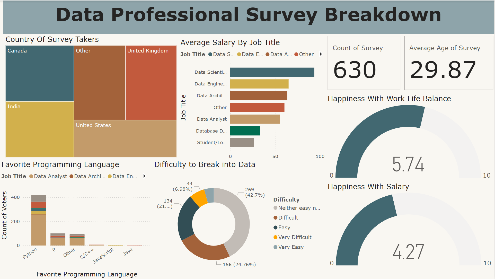
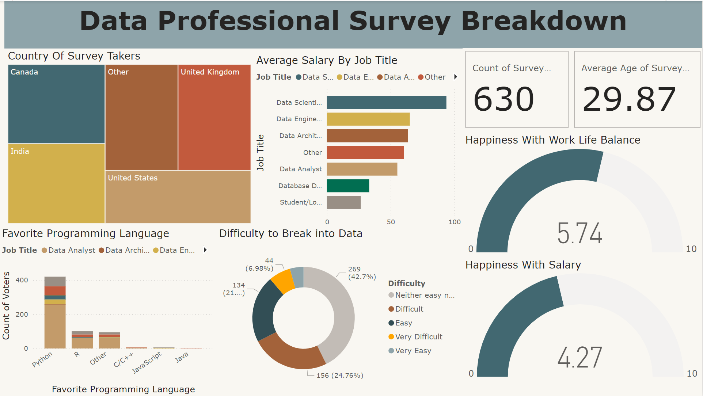

First Project: Layoffs from Around the World: In this project I used MySQL to clean Data for Layoffs from Around the World data set and was able to do Exploratory Data Analysis with the clean data.
Second Project: Covid-19 Deaths: In this project I used Microsoft SQL Server to clean data for Covid Deaths data set and explored the data using different SQL quaries. Skills used: Joins, CTE's, Temp Tables, Windows Functions, Aggregate Functions, Creating Views, Converting Data Types.
 

Used Power BI to clean data from Data Professional Survey Excel File and used Power BI to create Visualization Dashboard.

Tableau Dashboards I Developed for Different Projects.

Python-based applications were developed for BMI and mortgage calculations. Additionally, web scraping techniques were employed to extract data from an external source..

Employed Pandas for data cleaning, visualization, and exploratory data analysis within the Python environment.

Developed and implemented a spreadsheet model incorporating a solver to address a real-world linear optimization problem. Designed a user-friendly interface and integrated VBA code to connect the model, ensuring accurate data input, robust calculations, and error handling.
This portfolio showcases my professional accomplishments, academic achievements, and community involvement. It reflects my commitment to personal growth, my diverse skill set, and my dedication to inspiring and motivating others through both words and actions. I believe in leaving a lasting, positive legacy. My aim is to be remembered not just for my professional achievements, but for the positive impact I've had on the lives of others. As you explore this portfolio, you'll gain insight into my experiences, skills, and the values that drive me forward in my professional and personal life.